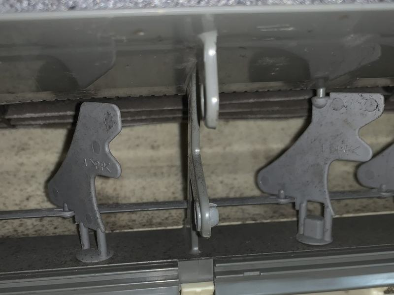

送風ファン｜実際の施工前と施工後（同じ箇所）
熱交換器の奥まで、
分解して洗います。
汚れの質を見て洗剤を選び、熱交換器とファンを専用機材で洗浄します。

施工前・実際の写真東京・千葉・神奈川／自社の職人が伺います
「送風口に黒い点が見える」の正体。ここが見えているときは、奥はもっと汚れています。
送風ファン｜実際の施工前と施工後（同じ箇所）
汚れの質を見て洗剤を選び、熱交換器とファンを専用機材で洗浄します。

作業後は、この水をお客様にもご覧いただいています。
表示はすべて税込です。お見積り以上の追加請求はありません。
11月の作業なら 9,702円（1台のご依頼は10%引き）
空いている日を見て予約する入力は1分・予約時のお支払いはありません お電話でも 080-8043-8259（8:00〜20:00）デザイン案C「写真が主役」のモック（未配信）